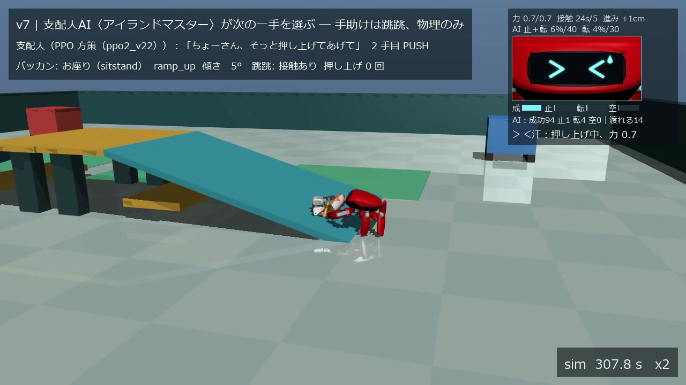
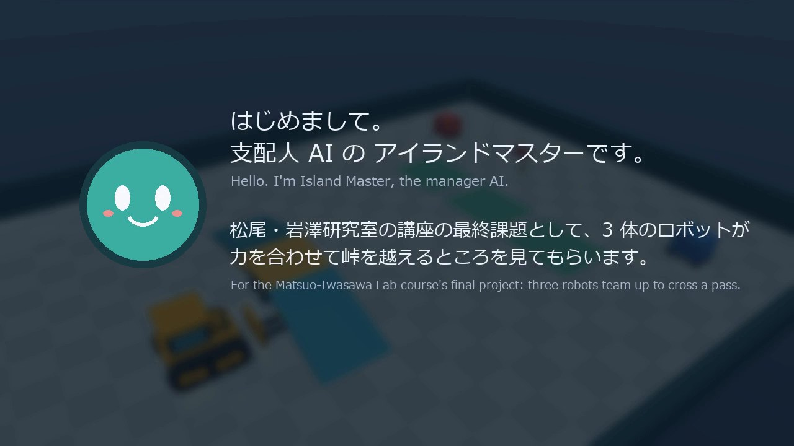
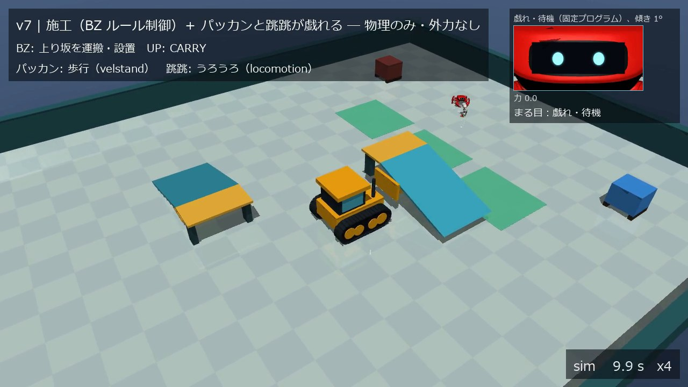
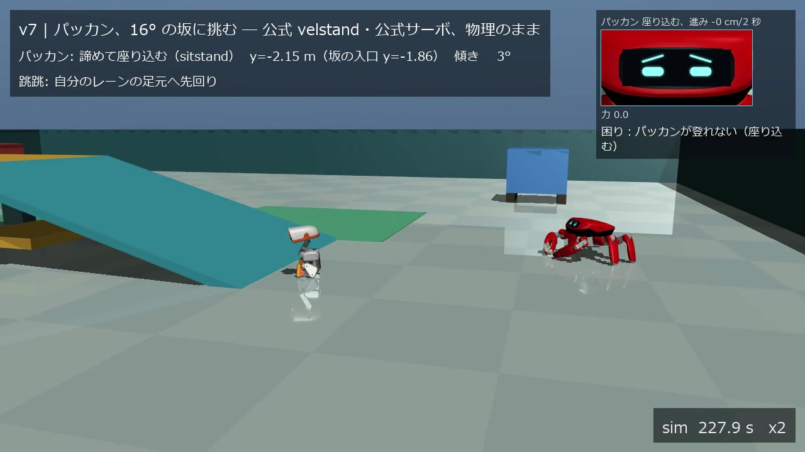
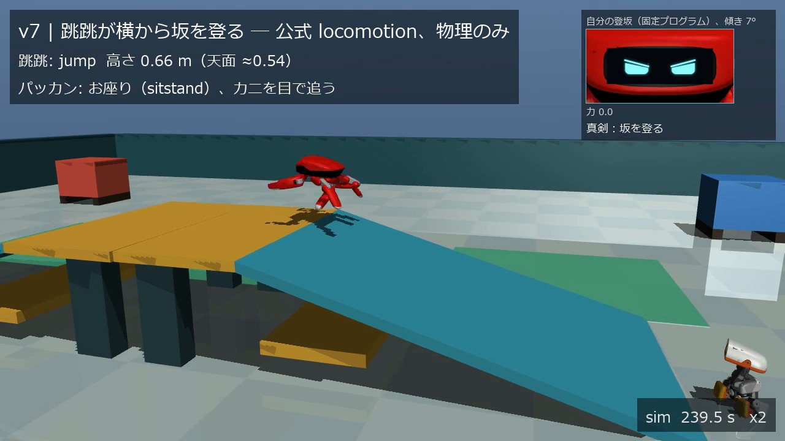
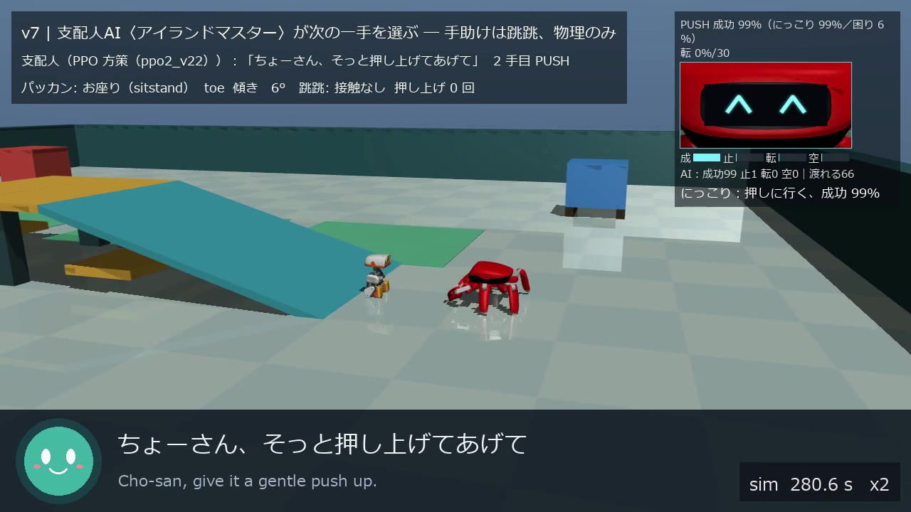
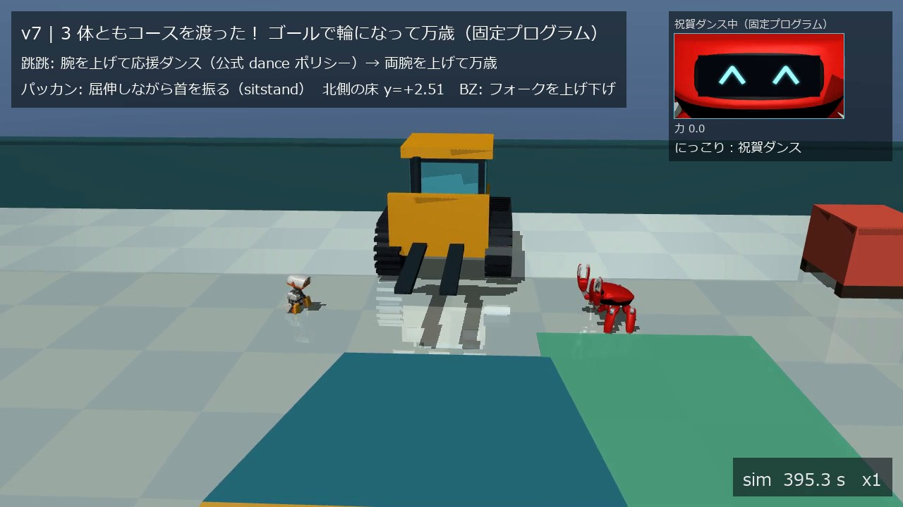
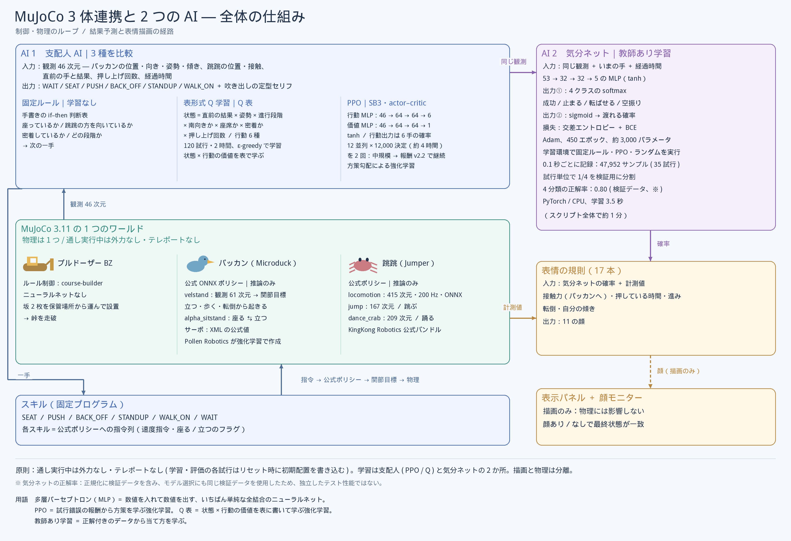
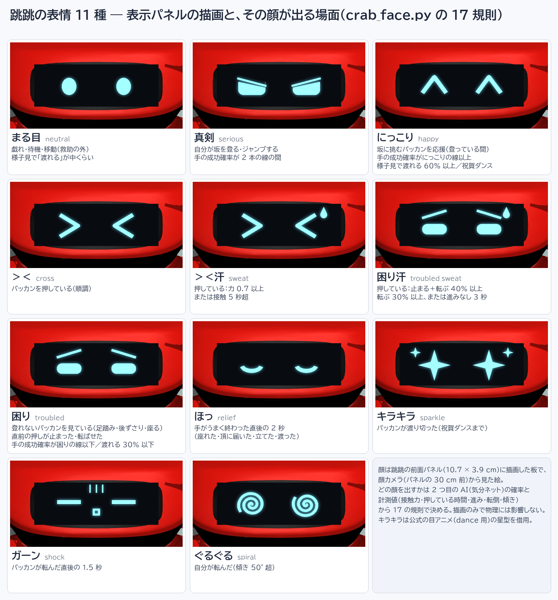
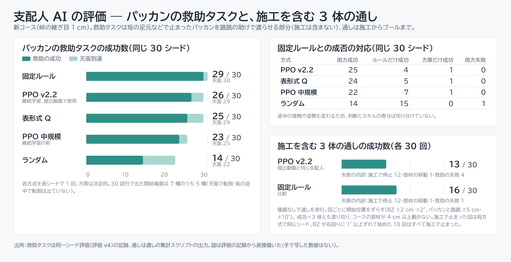

〜 みんなで峠をこえよう 〜
| 動画（YouTube、全体公開、2:57） | {{YOUTUBE}} |
| コード一式（GitHub、public） | https://github.com/ortiz-ai-partners/mujoco-3body |
| ブルドーザーと施工（自作、別リポジトリ） | https://github.com/ortiz-ai-partners/physical-ai-course-builder |
倍速の明記：本編の再生速度は画面右下に sim 時計とともに常時表示している（×4：施工・仲間を呼ぶ場面・ゴール前に集まる場面、×2：坂の挑戦と救助、×1：最後の万歳）。最大 4 倍。カット（省略）はなく、シミュレーションの全区間が映る。区間の時刻は付録 B。
ツール：MuJoCo 3.11.0。動画の通し実行の間は外力・瞬間移動を使わない（支配人 AI の学習・評価では、各試行のリセット時に初期配置を書き込む）。
ひとことで：公式の歩行ポリシーでは登れない 16° の坂を、別のロボットの押し上げと、次の一手を選ぶ学習した AI で、3 体そろって越える。

課題：AI とロボティクスを組み合わせた創造的なタスクを、シミュレーションか実機で実現し、動画で示す（AI の使用は必須。学習済みモデルの推論だけでもよい）。
課題設定：子ども向けの体操教室では、レッスンごとに坂やマットを並べてサーキット（運動のコース）を組み替える。この設営をロボットが手伝う場面を想定し、「ロボットが組んだコースを、体のつくりが違うロボットたちが渡り切れるか」を課題にした。既製の動作（公式の学習済みポリシー）だけでは登れない坂がある。そのとき次の一手を誰がどう決めるかを問いにした。
アイデア：1 体では渡れないコースを、体を持つ 3 体が役を分けて協力で渡る。施工する自作のブルドーザー、渡る二足のパッカン（Microduck）、助ける六脚の跳跳（Jumper、呼び名「ちょーさん」）。ロボットの弱点は隠さず、別のロボットの助けと、次の一手を選ぶ AI で補う。
実施内容：MuJoCo の 1 つのワールドで 3 体を同時に物理シミュレーションし、公式ポリシー 5 本を改変せず推論で動かした。そのうえで、体を持たない AI を 2 つ自作した。支配人 AI（PPO で学習した MLP）は、うまくいかなかったときに 6 つの手から次の一手を選ぶ。気分ネット（MLP）は、走っている手がどう終わりそうかを推論し、跳跳の表情を決める。動画では、ブルドーザーが坂 2 枚（勾配 16.3°、峠の高さ 0.44 m）で峠を組んで渡る。パッカンは 16° を登れず座り込み、跳跳は自力で登ってジャンプで越える。支配人 AI が次の一手を 4 回選び（座らせる → 押し上げる → 立たせる → 進ませる）、跳跳がパッカンを押し上げて、3 体とも渡り切る。
結果

0:10 自己紹介。支配人 AI が名乗り、何を見せるかを話す
0:21 施工（×4）。ブルドーザーが上り坂をフォークで持ち上げて運ぶ
1:28 パッカンは 16° を登れず、2 回挑んで坂の入口に座り込む
1:34 跳跳が坂を登り、天面でジャンプして越える
1:50 支配人 AI（PPO）の指示。画面下の帯に顔とセリフが打ち込まれる
2:46 3 体とも渡り切り、輪になって万歳（×1）時刻は提出動画の時刻。画像はすべて提出動画のフレーム。
| 加点要素 | この資料で主に対応する所 |
|---|---|
| 創造性 | §2 課題設定（施工する・渡る・助ける 3 体と、体を持たない 2 つの AI の分担）、§4 工夫点 1・3 |
| 技術力 | §3 システム構成（3 体の統合、支配人 AI、気分ネット）、§4 工夫点 2・5・6、§5 結果（救助タスクの同一シード評価、施工を含む通しの 30 回、気分ネットの独立テスト） |
| 実用性 | §2 きっかけ（体操教室のサーキット設営）、§4 工夫点 3・4、§6 考察（設営の自動化、施工の向きへの弱さ、実機で同じことをしたら） |
| 表現力 | §4 工夫点 7・8、付録 B 動画の構成（自己紹介、指示の帯、表情、倍速表示、自作 BGM、声の左右定位）と動画そのもの |
きっかけ：体操教室のサーキット設営（§1）を将来の応用先に考え、まず坂・マット・跳び箱のうち坂を運んで据え付けるブルドーザー（course-builder）を作った。本作は、組んだコースを性質の違うロボットたちが実際に渡れるかを確かめる場として組み立てた。
問い：既製の動作（公式ポリシー）が失敗したとき、次の一手を誰がどう決めるか。本作は、動作をスキル（固定プログラムが公式ポリシーに指令を出す）に任せ、どのスキルを使うかを支配人 AI が決める構成にした。
自分に課した原則
MuJoCo を選んだ理由：パッカンと跳跳の公式ポリシーはどちらも MuJoCo のモデル（MJCF）と組で配布されていて、自作のブルドーザーも MuJoCo で作っていた。同じ物理の上でなら、公式ポリシーを推論のまま、改変せずに動かせる。
創造性の主張：施工する・渡る・助ける 3 体の役割分担で、1 体では渡れないコースを渡らせた。公式ポリシーが 16° を登れない弱点を隠さず、別のロボットの体と、次の一手を選ぶ AI で補う点が本作の中心である。

3 体のモデル（MJCF）を 1 つに結合し、それぞれを次のもので動かす。既製と自作の全体は付録 A。
| 機体 | 動かしているもの | 区分 |
|---|---|---|
| ブルドーザー | course-builder のルール制御（運搬・施工・走行） | 自作、AI 推論なし |
| パッカン | velstand（観測 61 次元、50 Hz）、alpha_sitstand | 既製、推論のみ |
| 跳跳 | locomotion（観測 415、200 Hz）、jump（167、200 Hz）、dance_crab（209、50 Hz） | 既製、推論のみ |
観測は 46 次元（パッカンの姿勢・向き・位置、坂のどこにいるか、跳跳との距離と接触、直前の手とその結果など）。手は 6 つ：待つ（WAIT）、座らせる（SEAT）、押し上げる（PUSH）、離れる（BACK_OFF）、立たせる（STANDUP）、進ませる（WALK_ON）。
各手は固定プログラムのスキルとして走り、終わると 13 種の結果の 1 つを返す。報酬は救助の成功 +10、天面到達 +3 で、経過時間・転倒・無駄な手・時間切れ・コース破損を減点する。開始場面は 7 種で、試行ごとに重み付きで抽選する（坂の足元で座る・立つ・転倒などのほか、押し上げの直後や押し上げで転ばされた直後を再現した天面と坂の途中の場面を、立て直しの練習用に置いた）。各試行のリセット時にパッカンと跳跳の初期配置を書き込み、そこから先は物理だけで進める。
| 方式 | モデル | 学習 | CPU 時間 |
|---|---|---|---|
| 固定ルール | 条件分岐（実験で分かった知識を書いたもの） | なし | ― |
| PPO（提出動画で使用） | Stable-Baselines3 の MLP（64×64）、12 並列 | 12,000 決定＋報酬を直して 12,000 決定 | 8 h 41 min |
| 表形式 Q | 状態キー 7 要素（314 状態） | 120 試行 | 1 h 59 min |

入力 53（支配人 AI の観測 46＋いま走っている手 6＋経過時間 1）→ 32 → 32 → 5 の小さな MLP。出力は、走っている手の結末（成功・止まる・転ばせる・空振り）の確率 4 つと、「渡れる」確率 1 つ。学習データは、学習環境で固定ルール・PPO・ランダムの支配人を走らせた 35 試行・47,952 サンプル（学習は CPU で 3.5 秒）。
独立テスト：学習に使っていないシードで同じ作り方の 35 試行（44,230 サンプル）を集め直し、提出動画のネットを重み・正規化・しきい値ごとそのまま採点した。4 分類の正解率 0.76、成功か失敗かの均衡正解率 0.85、渡れるかの均衡正解率 0.62。学習時に分けた検証データでは 4 分類 0.80 だったが、入力の正規化とモデル選択に同じ検証データを使ったため、独立したテスト性能ではない。表情のしきい値は手によって新しいデータでずれた（失敗した押し上げのうち困りの線を下回ったのは 18%）。
表情は 11 種で、優先順の規則 17 本で決める。規則は気分ネットの確率と計測値（傾き、パッカンへの接触力、押している時間、進み、転倒）を組み合わせ、決めた値を画面右上の顔モニターに出す。PPO の価値関数を気分に使う案は、押し上げの間じゅう「絶望」と読んでしまうため採用しなかった。
ロボットや環境の困りごとを、何でどう補ったか。番号は §1 の加点要素の表から参照する。
| # | 困りごと | 施策 | 結果 |
|---|---|---|---|
| 1 | パッカンは公式の歩行ポリシーでは 16° の坂を登れない（指令 0.3 m/s に実速約 0.10 m/s） | 跳跳が後ろから押し上げる。座ったパッカンが跳跳の方を向いていると坂の縁で倒れないという実験の発見を、「座らせる」スキルの仕様にした | 押されている間の傾きは 6〜12° にとどまり、天面まで届く（坂の上を向いて座ると約 40° 傾き、縁で転ぶ） |
| 2 | 押し上げは失敗することがある（固定ルールが呼んだ 30 回のうち成功は 22 回） | 失敗したら次の一手を選ぶ支配人 AI を置いた。動作は既製のポリシーとスキル、どれを使うかは AI と役割を分けた | 救助タスクの成功は PPO 26/30、固定ルール 29/30。学習は CPU で数時間 |
| 3 | ブルドーザーだけでは、作ったコースを子どもが渡れるかの確かめにならない | 体格も歩き方も違う 2 体（二足の小型ロボット、六脚のカニ型ロボット）に渡らせる | 六脚の跳跳は自力で登って跳び越え、二足のパッカンは 16° を登れず助けが要った。同じコースでも体のつくりで難しさが違うことを確かめられた |
| 4 | 峠の継ぎ目（5 cm）でパッカンがつまずく | 学習で補わず、施工の精度を上げて継ぎ目を 1 cm にした | 救助タスクの成功が PPO 16→26、固定ルール 23→29（各 30 試行） |
| 5 | 跳跳の公式ジャンプはその場で真上に跳ぶ動作で、峠を越えられない | 公式 jump の関節目標に股関節の後ろへの掃きを重ね、前へ跳ばせた（外力なし） | 跳跳は自分で坂を登り、天面から峠を越える |
| 6 | 3 体の公式ポリシーは制御の周期も観測の作り方も違い、そのままでは 1 つの世界で動かない | 3 系統の MJCF を 1 つのモデルに結合し、配布元のコードから観測の作り方を転記した | 公式ポリシー 5 本を改変せず、推論だけで同時に動かせた |
| 7 | 施工の間（約 3 分）、画面が地味になる | パッカンと跳跳を空き地で遊ばせ、施工は 4 倍速で見せる | 施工の全区間を省略なしで 44 秒に収めた |
| 8 | AI が何を考えているかが画面から見えない | 判断の瞬間に支配人の顔とセリフを画面下の帯に出す。跳跳の表情を気分ネットで決め、表情を決めた値を顔モニターに出す | 見る人が、判断とその根拠を画面で追える |
パッカンの救助タスク：坂の足元などで止まったパッカンを、跳跳の助けで渡らせる部分（施工は含まない）。峠の継ぎ目 1 cm のコースで 30 シードを全方式で共有し、パッカンが峠を越えて北側の床に 2 秒立てば成功、コースが壊れるか sim 240 秒を過ぎれば失敗とした。30 試行で出た開始場面は 7 種のうち 5 種で、押し上げで転ばされた直後を再現した 2 種（天面で転倒・坂の途中で転倒）は評価していない。傾いた面で倒れたパッカンは自力で起き上がれないことがあり、起こす手もないので、成功数は実際より高めに出ている可能性がある（途中で転んで起き上がれなかった回は失敗に数えた）。
| 方式 | 救助の成功 | 天面到達 | 無駄な手／試行 | 転倒／試行 | 学習（CPU） |
|---|---|---|---|---|---|
| 固定ルール | 29/30 | 100% | 0.07 | 0.33 | なし |
| PPO v2.2（報酬を直した継続学習、提出動画で使用） | 26/30 | 97% | 0.60 | 1.03 | 8 h 41 min |
| 表形式 Q | 25/30 | 97% | 5.17 | 0.73 | 1 h 59 min |
| PPO 中規模（継続学習の前） | 23/30 | 83% | 0.47 | 0.87 | 4 h 13 min |
| ランダム | 14/30 | 73% | 8.20 | 1.53 | なし |

コースの破損は全方式で 0 回。PPO v2.2 の失敗 4 本・表形式 Q の失敗 5 本は、どれも固定ルールが成功したシードだった。同一シードで成否の対応を比較したが、途中の接触や姿勢も変わるため、判断とスキルの寄与は切り分けられていない。
施工を含む 3 体の通し：提出動画と同じ設定で、開始時の配置を少しずつずらし（ブルドーザーは ±2 cm・±2°、パッカンと跳跳は ±5 cm・±10°）、支配人ごとに描画なしで 30 回走らせた。描画なしは描画用の計算を省くので、物理の経路は動画と同一でない。成功は 3 体とも渡り切り、コースの部材が 4 cm 以上動かないこと。
| 支配人 | 通しの成功 | 施工で停止 | 部材の移動 | 救助の失敗 |
|---|---|---|---|---|
| PPO v2.2（提出動画と同じ） | 13/30 | 12 | 1 | 4 |
| 固定ルール | 16/30 | 12 | 1 | 1 |
施工で止まった 12 回は両方式で同じシードで、支配人が動く前に決まっている。ブルドーザーが右回りに 1° 以上ずれて始めた 10 回は、すべて施工で止まった。施工が終わりコースも動かなかった 17 回では、救助の成功は PPO 13、固定ルール 16 で、救助タスクの評価と同じ順になった。PPO の救助の失敗 4 回のうち 3 回は、押し上げが止まった後に「離れる」を選び続けて時間切れになった。
提出動画の本編：PPO の支配人が 4 手を選び、すべて成功した。固定ルールは押し上げの後に「離れる」を挟むが、PPO は押し上げが天面で終わった直後に「立たせる」を選び、1 手少なく渡り切った。転倒 0、コースの部材の移動なし。固定ルールの支配人を使った本編（5 手）も、比較用にリポジトリに置いた。
直接の応用先は、体操教室のサーキット設営である。坂やマットを運んで決まった位置と向きに据え付ける作業は、コースの設計データ（部材の種類・位置・向き）から施工手順を作れば、本作のブルドーザーと同じ形で自動化できる。渡る側がつまずかない精度（本作では継ぎ目 1 cm）で据え付けることが要点で、据え付けたコースを渡れるかをシミュレーションで先に確かめれば、設営後の点検にもなる。ただし、始めの向きが右回りに 1° ずれるだけで施工が止まったので、向きを測って補正する仕組みが要る。
「動作は既製のポリシー、どれを使うかは判断の AI、その根拠は画面に出す」という構成は、複数のロボットが働く現場（搬送や施工）で、人が監督しながら AI に判断を任せる形に向く。スキルを差し替えても判断の層はそのまま使え、学習も CPU 数時間で済む。
体のつくりが違う 3 体を 1 つの MuJoCo ワールドで動かし、公式ポリシーだけでは登れない 16° の峠を、別のロボットの押し上げと支配人 AI の判断で全員に渡らせた。動作は既製のポリシー、選ぶのは AI、根拠は画面に出すという分担で、学習した AI の判断を見える形にできた。一方、PPO の支配人はパッカンの救助タスクで 26/30 と固定ルール（29/30）に届かず、施工を含む通しは 13/30 にとどまった。施工の向きの補正と、倒れた相手を起こす手の追加が次の課題である。
| 要素 | 区分 | 内容と出典 |
|---|---|---|
| 物理エンジン | 既製 | MuJoCo 3.11.0（Apache-2.0） |
| パッカン（Microduck） | 既製 | Pollen Robotics の MJCF（microduck_rl、Apache-2.0、3D モデルは CC BY-NC-SA 4.0）と公式 ONNX velstand・alpha_sitstand。推論のみ。 |
| 跳跳（Jumper） | 既製 | KingKong Robotics の MJCF と公式バンドル（Apache-2.0）の ONNX locomotion・jump・dance_crab。推論のみ。 |
| ブルドーザーと施工 | 自作 | physical-ai-course-builder：機体モデル、坂の部材と施工手順、運搬・走行のルール制御（AI 推論なし）。同じ課題のために作成（MIT）。別の走行試験のために経路生成器 rsplan（Built Robotics、MIT）を版固定・無改変で同梱しているが、本作の施工では使っていない。 |
| 3 体の統合と筋書き | 自作 | MjSpec.attach による結合（時間刻みは施工中 0.005 s、施工後 0.001 s。パッカンのサーボは公式の値のまま）、観測の転記、通し台本、スキル 6 つ、跳跳の前方ジャンプ（公式 jump の関節目標に股関節の掃きを重ねる。外力なし）。 |
| 支配人 AI | 自作 | 多層パーセプトロン（MLP）の PPO 方策（観測 46 → 64 → 64 → 手 6、Stable-Baselines3）と表形式 Q（314 状態）。学習環境、報酬、学習、同一シード評価、施工を含む通しの試験。 |
| 気分ネット | 自作 | MLP（入力 53 → 32 → 32 → 出力 5、PyTorch）。データ収集、学習、独立テスト、表情 11 種と規則 17 本、顔モニター。 |
| パッカンの声 | 既製（移植） | Microduck 公式ランタイム（pollen-robotics/microduck）の声の合成器 sounds（Apache-2.0）を Python に移植。実機が鳴らす声と同じ作り方。 |
| 跳跳の声 | 自作 | クリック音とトリルの合成（Jumper には公開された声がないため）。 |
| 動画の演出と音 | 自作 | 自己紹介、指示の帯、字幕、効果音の合成、声の左右定位、BGM（numpy／scipy の加算合成。既存の曲・音源・サンプルは不使用）。 |
| 講座の OP／ED カード | 講座の素材 | 提出動画の最初と最後の計 6 秒。リポジトリには含めない。 |
| 提出動画の時刻 | 速度 | 内容 |
|---|---|---|
| 0:00〜0:03 | ― | 講座の OP カード |
| 0:03〜0:18 | ― | 支配人 AI の自己紹介（名乗り、講座の最終課題として何を見せるか、3 体の紹介、自分の仕事）。BGM はここから始まり、最後まで一定の音量 |
| 0:18〜1:02 | ×4 | 施工：ブルドーザーが坂 2 枚を運んで峠を組む（空荷の往復も省略しない）。その間パッカンと跳跳は空き地で遊ぶ |
| 1:02〜1:38 | ×2 | ブルドーザーが渡る（1:12 施工完了）、パッカンが 2 回挑んで座り込む（1:26）、跳跳が越える（1:37） |
| 1:38〜1:42 | ×4 | パッカンが仲間を呼び、跳跳がコースの東側を回って戻る |
| 1:42〜2:33 | ×2 | 救助：学習した支配人 AI（PPO）の 4 手（1:42 座らせる、1:48 押し上げる、2:24 立たせる、2:27 進ませる）。2:33 に 3 体とも渡り切る |
| 2:33〜2:37 | ×4 | 3 体がゴール前に集まる |
| 2:37〜2:54 | ×1 | 輪になって万歳（フォークの上下、屈伸と首振り、ハサミを上げるダンス） |
| 2:54〜2:57 | ― | 講座の ED カード |
画面：左上の字幕（場面と各機体の状態）、右上の顔モニター（跳跳の表情、気分ネットの値、決め手の値）、右下の sim 時計と倍速、判断のときだけ画面下の指示の帯。 音：パッカンの声は Microduck 公式の声の合成器の移植、跳跳の声と効果音は自作の合成。鳴いた機体の画面上の位置で左右に振る。跳跳のジャンプでは、足が地面を離れた瞬間と着地の瞬間を接触から検出して音を鳴らす。
再現：Python 3.10 で pip install -r requirements.txt（mujoco 3.11.0、onnxruntime、stable-baselines3、torch など）。ブルドーザーと Jumper のリポジトリを隣に並べ、次の 4 段で提出動画を作り直せる（講座のカードは別途用意）。
python v7_full.py --manager ppo --run ppo2_v22 --tag _take61 --build-speed 4 --no-cuts \
--speedup CALL=4 --speedup RETURN=4 --speedup CELEBRATE=4 --tail-write 1.0 # 本編（約 5〜8 分）
python intro.py # 自己紹介
python music/marimba_bgm.py # BGM
python assemble.py --op <OP> --intro out/intro.mp4 --main out/3body_arena_v7_take61.mp4 --ed <ED> \
--out out/submission.mp4 --bgm out/music/bgm_marimba.wav --bgm-gain -16 --bgm-until end --bgm-fade 0
本編の記録 out/v7_full_report_take61.json に、最終状態の sha256、出来事、支配人の判断と時刻、表情を記録した。学習・評価・気分ネットの手順、全テイクの台帳（失敗を含む）、表情の規則としきい値は GitHub の README と docs/ にある。
microduck_voice.py）は公式ランタイムの sounds（Apache-2.0）の移植。第三者資産の一覧はリポジトリの THIRD_PARTY.md にある。